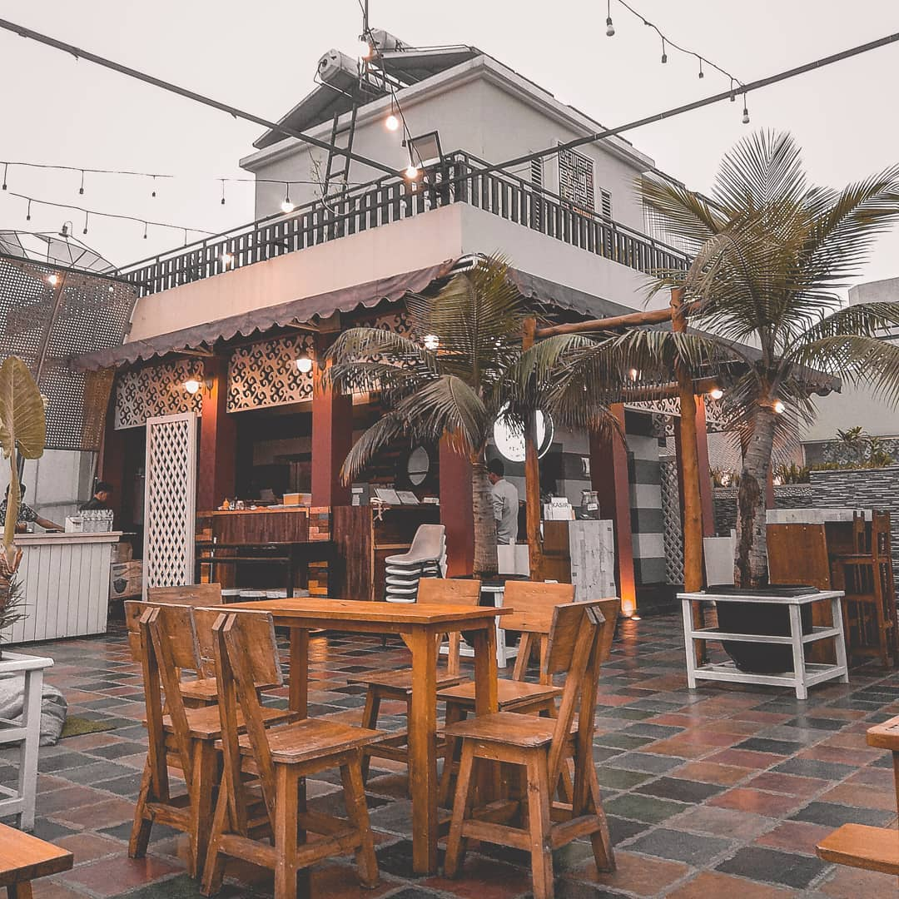
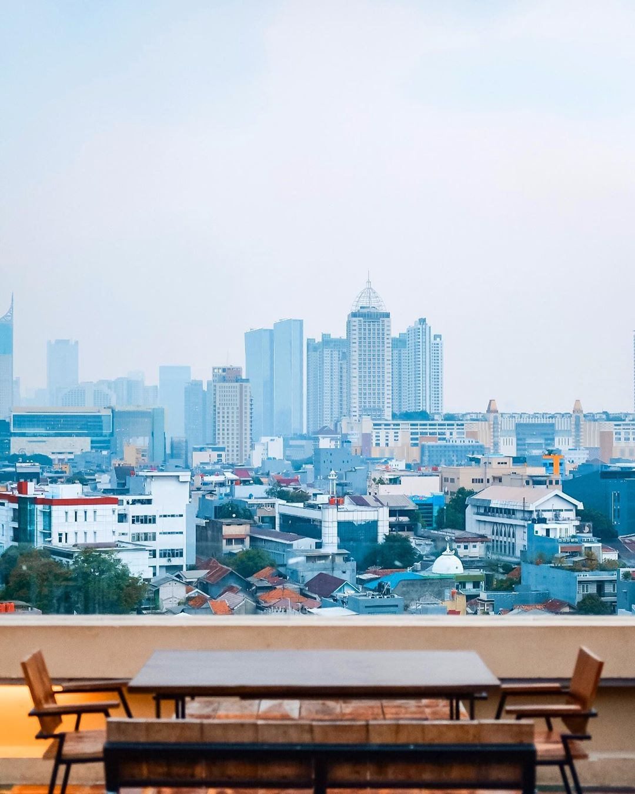
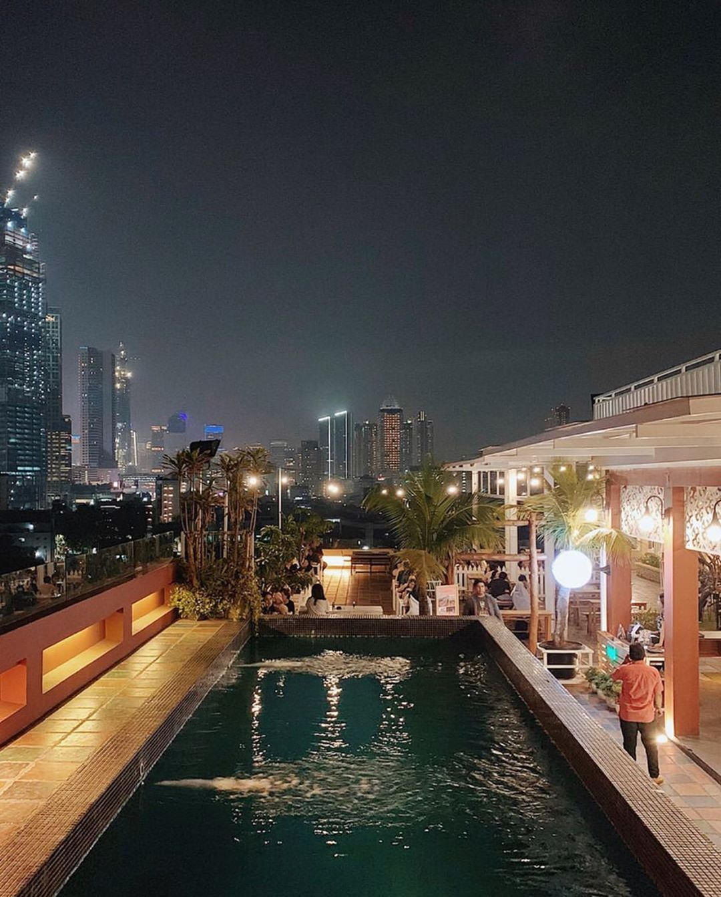
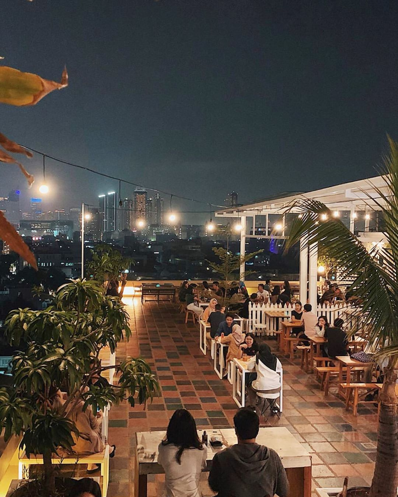

Kafe Rooftop jadi tempat yang paling banyak dipilih untuk sekadar nongkrong sambil ngemil. Cafe Rooftop Flamingo hadir dengan suguhan pemandangan kaki langit Tulungagung.
Mungkin kafe rooftop sudah banyak ditemukan di berbagai tempat. Yang sedang ramai ada kafe rooftop yang dikenal bernama Cafe Rooftop Flamingo. Cafe Rooftop Flamingo menawarkan sensasi makan di atas ketinggian beratap langit.
Lokasinya berada di lantai 8 hotel Crown Victoria yang berada di kawasan Tamanan, Tulungagung. Sambil menikmati makanan, di kafe rooftop itu kamu bisa melihat pemandangan gedung bertingkat yang ada di Tulungagung.
Mengunjungi kafe ini enaknya saat sore hari, karena bisa sambil melihat menikmati matahari terbenam yang perlahan sirna cahayanya. Disini kita bisa mendapatkan kesempatan menikmati keindahan senja di sore hari.
Disaat Malam hari berada di Cafe Rooftop Flamingo memberikan kesan romantis, sehingga tempat ini cocok dijadikan sebagai tempat berkencan untuk pasangan yang sedang memadu kasih. Apalagi ada bonus berupa hiasan gemerlap lampu-lampu dari gedung-gedung bertingkat yang mengelilingi kafe.



